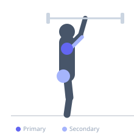
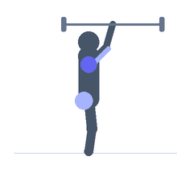

Exercise guide / Snatch-Grip Behind-Neck Push-Press
Snatch-Grip Behind-Neck Push-Press
The snatch-grip behind-neck push-press uses a wide barbell grip (wider than shoulder width, approximating a snatch grip) with the bar starting behind the head on the traps. The push-press component (leg drive) allows heavier loading than a strict press. The wide grip and behind-neck bar position place the shoulder in maximum external rotation, which trains the posterior capsule and rotator cuff while also loading the lateral and posterior deltoid. This movement is primarily used in Olympic weightlifting and strength sport accessory training, requiring above-average shoulder mobility.
Primary muscles
deltoid lateral
deltoid anterior
Secondary muscles
triceps brachii
gluteus maximus
Stabilizers
infraspinatus
erector spinae
Equipment
No Equipment (Bodyweight)


Starting position
- Set a barbell on a rack at upper-trap height. Take a wide snatch grip. The bar rests behind the head on the upper traps. Feet shoulder-width apart.
Setup
- Requires substantial shoulder external rotation mobility. Screen with a PVC pipe or empty bar before loading. This is an advanced movement for athletes with verified shoulder mobility.
Steps
- Step 1: Unrack the bar onto the upper traps. Maintain the wide snatch grip.
- Step 2: Dip the knees 10-15 cm, maintaining an upright torso.
- Step 3: Drive upward explosively through the legs, transferring momentum to the bar.
- Step 4: Complete the press by extending the arms overhead.
- Step 5: Lower under control back to the traps. Rerack after the set.
Coaching cues
- Wide grip — snatch width
- Bar on the traps, not the neck
- Dip straight — drive straight — press straight
Breathing
- Inhale and brace. Exhale through the drive and press.
Range of motion
- Upper trap level to full overhead lockout.
Tempo
- Explosive drive, 2s lower
Common mistakes
- Attempting this without adequate shoulder mobility — always screen mobility before loading
- Narrow grip — the snatch grip width is what distributes the shoulder load
Safety
- Requires excellent shoulder external rotation and thoracic extension mobility
- Do not perform if any shoulder pain occurs — the behind-neck position is not appropriate for all athletes
- Must be learned and practiced with an empty bar before loading
Training
- strength: 3–6 reps
- power: 2–5 reps
- strength: 3–5 sets
- Rest: {'strength': 240, 'power': 300}